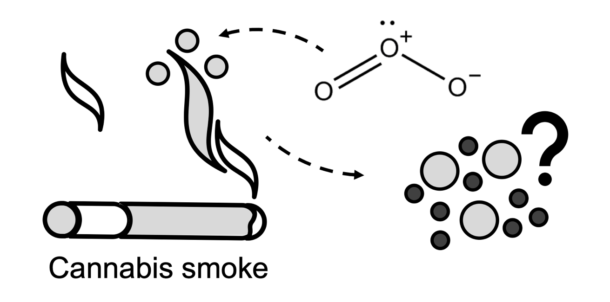

Monday, May 8th (PM)
Exploring the potential of broadband complementary metal oxide semiconductor micro-coil nuclear magnetic resonance for environmental research
Daniel Lysak and Andre Simpson
With sensitivity being the Achilles’ heel of nuclear magnetic resonance (NMR), the superior mass sensitivity offered by micro-coils can be an excellent choice for tiny, mass limited samples such as eggs and small organisms. Micro-coils with sizes in the range of 100s of microns have been reported to have mass sensitivity values orders of magnitude higher than standard 5 mm probes, allowing for improved NMR analysis of tiny samples.
A recent trend in microcoil NMR has been the use of complementary metal oxide semiconductor (CMOS) based microchips which include an integrated circuit containing all transceiver electronics. This “NMR on a chip” approach provides several advantages over micro-coils interfaced to discrete electronic components including: excellent sensitivity, the ability to have a broadband coil for analysis of heteronuclei, decreased parasitic losses by eliminating coil leads, and easy expansion to multiple coils on a single chip, allowing increased sample throughput or concurrent analysis of different samples. Here, the potential of CMOS based devices for environmental research is investigated.
Numerous heteronuclei such as 7Li, 11B, 13C, 19F, 23Na, 27Al, 31P, and 205Tl were detectable and 13C and 19F were used to study two environmental samples: a sprouting broccoli seed and a single Daphnia magna egg. The D. magna egg was exposed to hexafluorobenzene, and the contaminant was monitored within the egg by 19F NMR. Overall, broadband CMOS microcoils are shown to have significant potential for environmental research.

A time series of the 19F NMR signal corresponding to hexafluorobenzene from a single Daphnia magna egg. The red Trace is the first time point, with increasing time resulting in a decrease in signal and downfield chemical shift. The inset shows a microscope image of a Daphnia magna egg.
Investigating the impacts of warming and nitrogen-addition on soil-derived dissolved organic matter
Atzín San Román and Myrna Simpson
Dissolved organic matter (DOM) can account for as much as 5% of the soil organic matter (SOM) found in forest soils. DOM represents the most mobile and reactive carbon (C) fraction in forest soils, and it plays an important role in global C cycling, helping to transport nutrients within soil profiles and throughout aquatic systems. However, several aspects of global environmental change amplified by human activities, such as increased temperatures and nitrogen (N) deposition, can alter soil microbial communities, and the biogeochemistry of DOM. Yet, there is still a lack of molecular-level understanding of the biogeochemical perturbations to the C cycle with respect to global environmental change. Thus, this study aims to identify how warming, N-addition, and warming + N alter DOM chemistry and cycling. To investigate this, samples from the soil warming and nitrogen (SWaN) study at the Harvard Forest Long-term Ecological Research site are analyzed after 4, 10, and 14 years of treatment (warming, N-addition, and warming + N). The samples are characterized via nuclear magnetic resonance (NMR) spectroscopy to evaluate changes in the composition and degradation of DOM in response to environmental changes. It has been noted that N-addition can slow SOM decomposition while warming and warming + N can accelerate decomposition. Thus, we expect to see similar trends with DOM where warming + N will mirror warming, but not to the same extent. Overall, this study will provide molecular-level insight into the unique impacts of different environmental stressors on forests, both separately and simultaneously.
Atmospheric reaction in single levitated droplets under variable humidities
Chris Rusiewicz and Jamie Donaldson
Carbonaceous aerosols like Black carbon (BC) contribute considerably to positive radiative forcing. Within the last two decades a new classification has arisen describing a highly wavelength dependent organic aerosol termed Brown carbon (BrC). Primarily emitted from biomass burning, BrCs exact contribution to the radiative budget and its fate inside the atmosphere are not fully understood. Previous work from our group using acoustically levitated droplets containing water soluble pine wood smoke showed a red shift in the absorbance spectra that was partially attributed to heterogeneous photochemistry in the presence of molecular oxygen. However, those experiments were carried out under very low humidities, thus photo-oxidation occurred at the same time as evaporation, complicating results. I have focused on increasing the relative humidity to the deliquescence point of atmospherically relevant inorganic salts to achieve a stable droplet. Droplets containing Phenol Red can be easily measured by UV-vis absorption, and it was found that droplet volume and spectroscopic measurements could be made stable over time spans of hours. Introducing gaseous acid or base into the chamber will induce a detectable and quantifiable pH shift which will be the next objective. The ultimate future work will focus on quantifying the observed red shifts in levitated droplets by using well-defined BrC components and determining reaction pathways leading to the observed red shift through composition analysis by high resolution mass spectrometry.
DREAMTIME NMR of slow spinning systems using High-Resolution-Magic Angle Spinning
Rajshree Ghosh Biswas and Andre Simpson
NMR spectroscopy is a powerful analytical technique providing molecular-level information in complex samples, non-invasively. However, NMR suffers from some limitations, including low sensitivity, and large spectral overlap from multiple chemical structures with similar resonance frequencies. Moreover, due to magnetic susceptibility distortions arising from inhomogeneous samples (gel-like tissues, solution-like biofluids), signal broadening makes discerning metabolite information difficult. High-Resolution-Magic Angle Spinning (HR-MAS) alleviates this by spinning samples at high speeds (KHz range) to dramatically narrow lineshape and improve sensitivity. However, at such high spinning speeds (>3000 Hz), biological tissue of organisms tends to rupture thereby making in vivo monitoring difficult. Thus, organisms must be spun slowly to improve their survival. For example, at 2500 Hz, freshwater shrimp (Hyalella azteca) can survive up to 14hrs, whereas at 500 Hz, this improves to ~ 48hrs. Moreover, organisms must be maintained in a rotor of water to ensure their survival and reduce magnetic susceptibility distortions. Unfortunately, at reduced spinning, spectral overlap, water resonances and spinning artifacts (spinning sidebands), hinders isolating and assigning specific metabolites. To alleviate this, we apply the novel DREAMTIME NMR technique to selectively isolate individual and multiple metabolites from complex heterogenous mixtures under slow spinning, with improved sensitivity. This study also introduces a new variation of DREAMTIME (SLOWMAS) designed specifically for slow spinning to supress the broad water resonances and its subsequent sidebands for in vivo monitoring. Here, DREAMTIME SLOWMAS will be demonstrated for the first time, using ex vivo worm tissue and compared to traditional DREAMTIME NMR and water suppression techniques.

Selective detection of alanine using DREAMTIME and SLOWMAS in a worm, ex vivo, at 500 Hz under MAS.
Photoreaction aging of biomass burning brown carbon
Carolyn Liu-Kang and Jonathan Abbatt
Biomass burning brown carbon (BrC) has been shown to significantly impact global climate by influencing Earth’s radiative balance. It’s ability to absorb light in the visible and ultraviolet regions contributes to warming effects. However, a wide range of aging mechanisms in the atmosphere can alter the composition and corresponding optical properties of BrC, in both the aqueous and particle states. Due to BrC’s chemical complexity, as well as these many aging processes, the contribution of BrC to overall aerosol light absorption to remain highly uncertain. Isolating each individual aging mechanism is key to understanding the global picture of BrC’s behavior during its residence time in the atmosphere. In this study, the link between the chemical composition and the absorption properties of BrC from photoreaction, i.e., light exposure, was investigated in both the aqueous phase and the particle state. Pine wood was smoldered in-lab as the source of wood smoke particles, followed by aging from ultraviolet light exposure directly on filters (particle state), or after extraction in water (aqueous phase). Changes in the optical properties were observed with a UV-visible spectrophotometer, while potential radical formation was monitored with an EPR (Electron Paramagnetic Resonance) spectrometer. In addition, information on chemical composition before and after aging was obtained with mass spectrometry techniques. Initial results show an absorption enhancement following light exposure at short timescales. Further investigation into concomitant reactants in play indicate the important role of molecular oxygen in this aging mechanism, whereas hydroxyl radicals do not play a role.
Evaluation of irradiated Wyoming-type bentonite natural organic matter at varying moisture levels
James Neurauter and Myrna Simpson
Wyoming-type bentonite clay (MX-80) has been selected by Canada’s Nuclear Waste Management Organization (NWMO) as a deep geologic repository buffer material. These bentonites are intended to facilitate the isolation of used nuclear fuel and prevent radionuclide release as an adsorbent. Water and natural organic matter (NOM) are present in mined bentonite clays, and the latter may serve as a source of nutrients for microbial activity, potentially inducing used fuel container corrosion over time. As the proposed deep geologic repository buffer material, Wyoming-type bentonite will be subjected to irradiation due to its proximity to used fuel containers. This renders the radiolysis of water a concern, as it promotes the formation of products capable of oxidizing NOM and potentially accelerating microbial degradation. While the diagenetic alteration of Wyoming-type bentonite NOM has been noted, there is limited knowledge concerning the sensitivity of NOM chemistry to irradiation at different water contents. To investigate this further, molecular-level techniques were employed to assess compositional differences of irradiated (100 kGy for 3 days) Wyoming-type bentonite NOM samples with gravimetric water content levels ranging from 20% to 80% of the sample mass. The total, organic, and inorganic carbon concentrations were determined via elemental analysis while solid-state NOM evaluation was conducted via 13C nuclear magnetic resonance (NMR) spectroscopy, and targeted compound analysis was performed via gas chromatography-mass spectrometry (GC-MS). This project will determine whether products of water radiolysis increase the chemical reactivity of Wyoming-type bentonite NOM, contributing to the substantiation of safe and reliable used nuclear fuel storage.
Integrated screening of bioactive contaminants contributing to the high receptor activities in St. Lawrence beluga whales
Holly Barrett and Hui Peng
While elevated tissue concentrations of pollutants have been reported in St. Lawrence Estuary (SLE) belugas, the exact bioactive chemicals exerting toxicity remain unknown. We integrated chemical analysis and receptor activity screening to identify contaminants of potential toxicity in SLE beluga liver and blubber and reference Arctic beluga blubber.
Contaminants were extracted from pooled tissue of whales found stranded from 1990-2017. Extracts were analyzed by mass spectrometry, and results were matched to a database of known bioactive chemicals (Tox21). ~200 matched compounds were significantly more abundant in the SLE tissue than Arctic tissue. Extracts were tested for their activity towards the AhR receptor to investigate the contribution of known and unknown chemicals towards AhR-mediated responses, and significant responses were detected (e.g., 0.16 g/mL liver induced AhR). Consistent with the more diverse chemical burden found in SLE belugas, SLE tissue exerted significantly higher AhR activity than Arctic blubber. Several AhR-active compounds detected through Tox21 screening were found to partially explain the SLE activity, including natural indoles and synthetic dyes. The extracts were then screened against a suite of 48 human nuclear receptors (NRs), revealing significant activities for several NRs. Distinct from Arctic blubber, the SLE extracts exerted significant activity towards several NRs with functions in cancer progression, such as the pregame X receptor (PXR). These results mark the first time that receptor activity has been measured for SLE belugas. Ongoing work focuses on using affinity pulldown nontargeted analysis (APNA) to confirm the ligands responsible for the activity of PXR and other NRs.
NMR in an eggshell – in vivo carbon tracing and embryogenesis study of Society Finches
Katrina Steiner and Andre Simpson
In vivo NMR is an insightful and powerful analytical technique that permits the “real-time” analysis of samples in their natural and unaltered states. These criteria are especially important when studying intact biological samples and living organisms. A particularly interesting application of in vivo NMR is in embryo developmental studies. Limited in vivo NMR embryogenesis studies have already been done on small amphibian and aquatic eggs, and even less on mammalian eggs. The research presented here aims to investigate carbon transformation pathways during embryo development of Society Finch bird eggs via In vivo NMR techniques. Bird eggs are an excellent model for environmental studies as they are highly sensitive to environmental changes.
A custom egg incubator (figure 1) is designed in a 15 mm NMR tube to: (1) maintain proper humidity for egg development, (2) prevent egg movement while inside the spectrometer, and (3) allow for instrument locking using a D2O lock bulb. Radiofrequency pulsing and powerful NMR gradients have the potential to cause sample heating which can be problematic when studying biological systems. Thus, before analysing fertilized bird eggs which are sensitive to temperature change, it’s important to identify and eliminate such heating. Next, fertilized bird eggs are analyzed using various 1D and 2D solution state NMR experiments combined with filters and spectral editing to target metabolites of particular sizes. Eggs are analyzed from day 1 of fertilization to near hatching. Results of this study additionally have the potential to provide the foundation for future embryotoxicity testing using environmental contaminants.

Egg incubator in a 15 mm NMR tube.
Haloacetonitrile toxicities attributed to distinct reactions with proteins thiols
Kirsten Yeung and Hui Peng
Disinfection by products (DBPs) are formed in disinfected/santized water which have been correlated with incidences of disease such as bladder cancer and adverse pregnancy outcomes. Recently, haloacetonitriles (HANs) have been highlighted as an emerging DBP with stronger toxicities than regulated DBPs. This talk will elucidate the toxicity mechanisms of HANs, including monoHANs and polyHANs, by investigating their reactivity with protein thiols. Despite the ’simple’ structures of HANs, 3 disinct reaction pathways were observed which were attributed to the various toxicities depending on the type and number of halogens present. Both substitution and addition reaction pathways will be discussed. Cytotoxicity and oxidative stress bioassays were employed to determine the ability of various HANs to induce toxic effects and the role of each HANs’ preferential reaction pathway in predicting harmful effects in the human cell. The descending toxicity rank order by using reporter cell systems is as follows: iodoacetonitrile ≈ dibromoacetonitrile, bromoacetonitrile, trichloroacetonitrile ≈ chloroacetonitrile ≈ dichloroacetonitrile. Activity based protein profiling (ABPP) was used to image in vitro HAN adduction effects on protein thiols in human cells. The ABPP rank order was similar to that of the oxidative stress assays with differences among the low/no-toxicity chlorinated species. The strong toxicity of dibromoacetonitrile is unexpected, due to its unexpected debromination and substitution reaction pathway(s) which were probed by both mass spectrometry and NMR.

Substitution and addition reaction scheme between polyHANs, monoHANs, and GSH.
Observing secondary organic aerosol formation from oxidation of cannabis smoke
Kristen Yeh and Jonathan Abbatt
Exposure to ultrafine fine particles (UFP) may lead to significant health impacts due to their small particle size and high deposition efficiency in the lower respiratory tract. Early studies of primary emissions from cannabis smoke have identified several gaseous compounds which have the potential to react with atmospheric oxidants. These reactions form less volatile species which may contribute to secondary organic aerosol (SOA) and UFP formation. Whether SOA and UFP formation occurs during oxidation of cannabis smoke remains to be investigated. This work aims to fill existing knowledge gaps by characterizing the particle size distribution of primary aerosols emitted from cannabis smoke and observing secondary organic aerosol formation when smoke is exposed to ozone (O3). Cannabis smoke was introduced to an environmental chamber connected to instruments for characterization of particle and gas-phase emissions. For analysis of primary aerosols, smoke was added to a chamber containing less than 5 ppb O3. When observing SOA, smoke was added to a chamber containing approximately 100 ppb O3. Prior to ozone exposure, primary aerosol mass concentrations were comparable to aerosol concentrations previously observed in primary cigarette smoke. After ozone exposure, aerosol mass concentrations were observed to increase. Additionally, a new mode of particles in the ultrafine diameter range was detected after ozone exposure. The diameter of the newly formed particles was observed to increase over the aging period.
